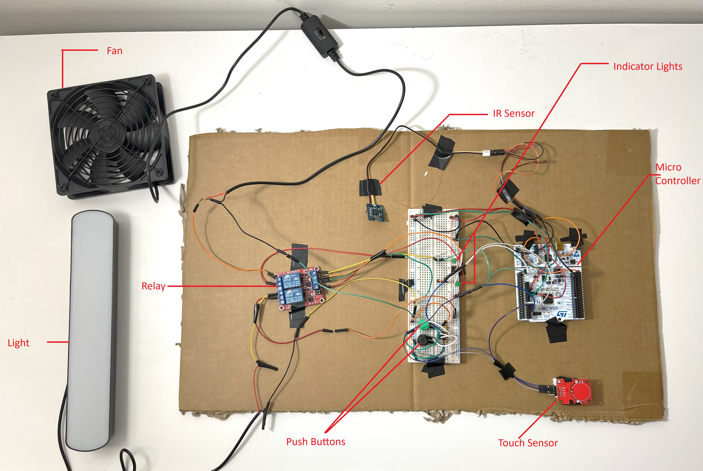
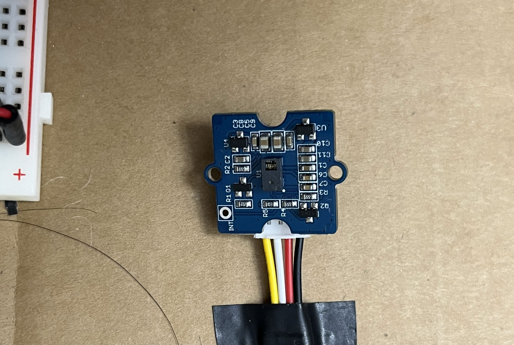
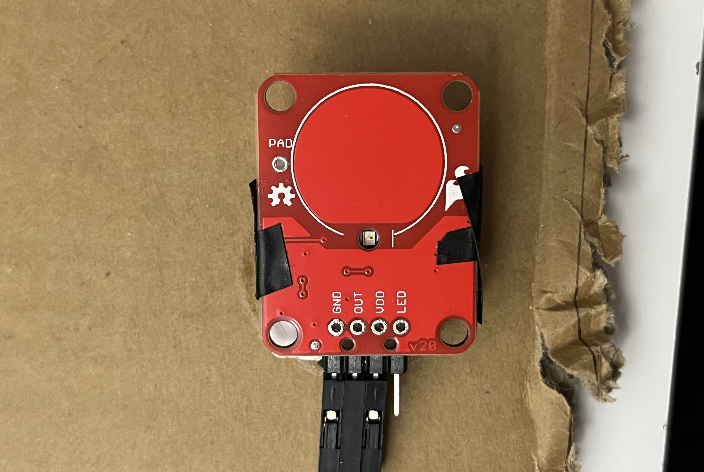
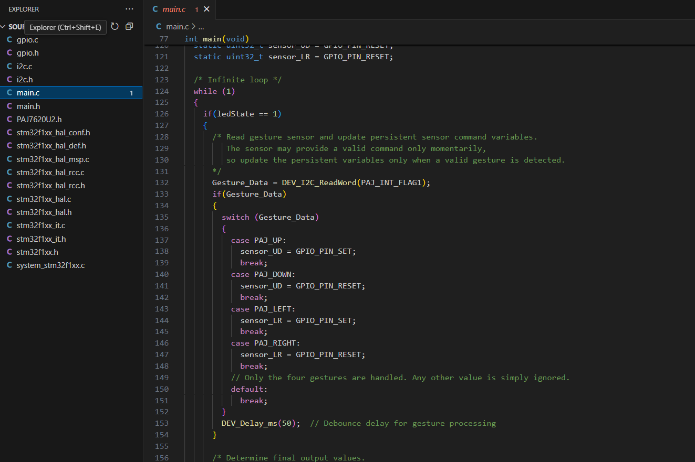

C++, Assembly | Microprocessor System Design & Digital Logic
A Top-Down View of the Project with all I/O sensors and devices connected to the STM32F103RB microcontroller
For this individual design project, I embarked on an individual design challenge:
to create a gesture‑based device controller that seamlessly integrates what I learned
about microcontrollers, logic devices, and communication interfaces. The result is a
hands‑free control system that uses the Grove PAJ7620U2 gesture sensor (I²C) and a
SparkFun AT42QT101 capacitive touch sensor to activate and deactivate appliances—eliminating
the need to press buttons. For robustness, manual override push‑buttons ensure reliable operation
even if gesture detection falters, while an LED indicator clearly communicates system status.
Powered by the STM32F103RB Nucleo‑64 board, this project pulled together analog signals, I²C,
USART, SPI, GPIO control, and power‑management considerations into one cohesive, user‑friendly
design—demonstrating both technical skill and real‑world applicability in home automation.
Tools Used
Programming
C++ | Assembly
Behind the Build: A Visual Story

Top-Down View of Project
The gesture-based device controller features a compact and functional layout with a centrally mounted STM32F103RB
Nucleo-64 board. It includes a Grove Gesture Sensor, SparkFun Capacitive Touch Sensor, two momentary push buttons,
a 5V dual-channel relay module, and an onboard LED. The Grove Gesture Sensor is connected via I²C and powered through
3.3V logic line. The SparkFun Capacitive Touch Sensor is visible for user access and toggles gesture mode. The wiring
is cleanly routed with careful attention to voltage compatibility and grounding.

Grove Gesture Sensor (PAJ7620U2)
The Grove PAJ7620U2 gesture sensor is responsible for detecting hand motions such as up, down, left, and right.
Connected via I²C on PB8 and PB9 and powered by 3.3V, the sensor plays a central role in enabling contactless
control over the relay outputs. Although the sensor supports more complex gestures and object detection, this
project specifically uses basic directional gestures to simplify processing and improve reliability. The sensor
continuously reads motion input within its detection field and relays recognized gestures to the microcontroller,
which then updates the state of the corresponding output relays. The decision to limit gesture detection to four
simple swipes enhanced stability and ensured consistent results during testing.

Capacitive Touch Sensor (AT42QT101)
The SparkFun Capacitive Touch Sensor serves as a toggle switch for
enabling or disabling the gesture detection mode. Its output pin is
connected to PA0 on the microcontroller, while the power and ground lines
are tied to the 3.3V and GND of the Nucleo board. When touched, the sensor
sends a HIGH signal to PA0, triggering the system to enter gesture mode.
During this mode, the LED LD2 on the board lights up to provide visual confirmation.
Touching the sensor again exits gesture mode, resets the relays to their default off state,
and turns off the LED. Although initial reliability issues were encountered due to improper
` soldering, these were resolved, and the sensor provided stable activation signals thereafter..

Source Code
The source code was developed in C using Keil uVision5, STM32CubeIDE and adapted
from example code provided by Waveshare for the PAJ7620U2 sensor.
Only the up, down, left, and right gestures were retained and handled,
simplifying the gesture recognition logic. The main program initializes
the I²C communication, configures GPIOs for the touch sensor, relay outputs,
and push buttons, and maintains the last recognized gesture to keep the
corresponding relay active until a new gesture is received. A toggle
mechanism monitors the capacitive touch sensor to switch gesture detection mode
on and off, while the LED indicator reflects the active state. Manual
override push buttons are programmed with interrupt or polling logic to
force relay outputs regardless of gesture state. Although USART debugging
was employed during development to verify gesture recognition, it was not
included in the final deployment firmware per the functional specification.